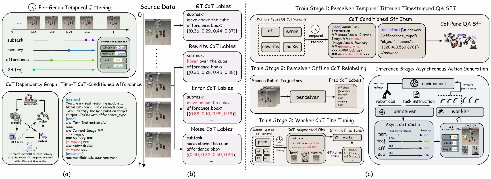
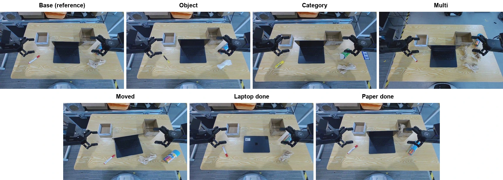
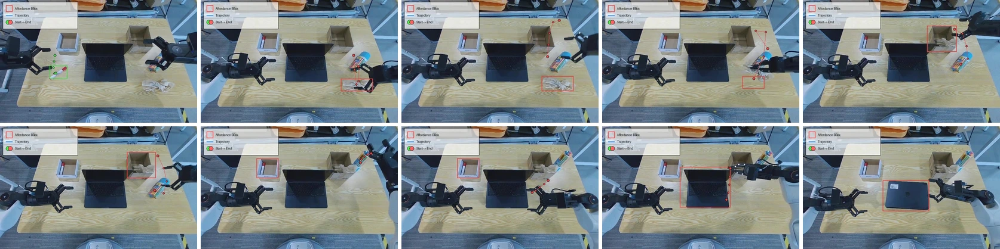

Guidance under Shift.
Deployment-Aligned Semantic Interfaces
for Vision–Language–Action Policies
Reasoning takes time.
Control keeps moving.
A robot's guidance can arrive late, go missing, or be wrong. We train the action policy on these conditions, with an explicit age for each field, so it can use guidance alongside what it sees now.
Meet the Perceiver and WorkerLIBERO mean success
Across four task suitesRoboTwin held-out success
25 unseen tasks · 19.48% baselineReal-robot Base score
Mean subtask score · 40% baselineTeach the policy
what deployment
actually looks like.
Explicit reasoning can expose task progress and spatial intent. Its usefulness depends on how the action policy learns to use it.
Training annotations are often clean and synchronized. Online predictions have changing reliability and arrive from earlier observations. This gap can make a policy over-trust its guidance.
Our flow-matching analysis separates the information guidance adds from the error of using it. The resulting bound connects deployment error to training fit, coverage of deployment guidance, and conditional drift.
We turn this analysis into a training recipe: mix annotated, generated, perturbed, and missing guidance; vary each field's physical age; and keep current observations and demonstrated actions aligned.
Read the abstract
Explicit chain-of-thought (CoT) can improve vision–language–action (VLA) policies by exposing task progress and spatial intent, but guidance available during training is often more reliable and temporally aligned than online predictions at deployment, which may be incorrect, missing, or outdated. This mismatch can make a policy trained with reliable guidance brittle at deployment. Our flow-matching analysis bounds the deployment loss by training error, guidance-distribution coverage, and conditional drift, motivating two training principles: covering deployment-time guidance conditions and exposing the policy to temporal staleness. We therefore train a VLA policy with subtask descriptions, affordance regions, and image-space trajectories drawn from annotated, generated, corrupted, and missing guidance, while varying their physical age—the elapsed time from the source observation to policy use. Current observations and action supervision remain aligned. An asynchronously refreshed dependency graph overlaps reasoning and action generation while preserving an explicit and inspectable CoT interface. Controlled evaluations vary guidance reliability and physical age. We evaluate closed-loop success on LIBERO and on training and testing tasks of RoboTwin 2.0, as well as a real-world “desktop-cleaning” task and its variants, demonstrating robustness and generalization on physical robots.
Think asynchronously.
Act on current observations.
The Perceiver predicts structured guidance. The Worker generates continuous action chunks from the latest camera views, robot state, and available guidance.
Observe
Camera views
Instruction
Robot state
Reason & refresh
Latest field + age
Fields update independently.
Cached guidance ages until refreshed.
Generate actions
Current observations
+ latest guidance
+ each field's age
Train the Perceiver
Supervised learning from structured annotations, with temporally varied context and missing fields.
Generate offline guidance
Run the trained predictor over demonstrations using its own predicted history.
Train the Worker on a mixture
Sample guidance sources and earlier times independently for each field, with current action targets.

“Clean the desktop.”
Let the scene guide the work.
Base-only adaptation on 866 demonstrations. Direct evaluation on changes in appearance, object category, item count, pose, and task progress.
Reference layout
The robot places the pen, deposits the paper, stands the marker box upright, and closes the laptop.
π₀.₅ baseline: 40%
Camera view crops the lower guidance text panel. The full timeline is retained; 2× playback. The original includes the complete guidance overlay.
Each video is one recorded trial, separate from the five-trial averages. The Moved recording includes a failed paper subtask. No action interval is removed from the display versions.

Measure performance.
Then vary the guidance.
Closed-loop success measures task completion. Controlled fixed-state evaluations measure how action error changes with incorrect, stale, or missing guidance.
LIBERO
Success rate (%) ↑| Method | Spatial | Object | Goal | Long | Mean |
|---|---|---|---|---|---|
| π₀.₅ | 98.5 | 99.0 | 97.5 | 93.5 | 97.1 |
| Embodied-R1.5-VLA | 98.3 | 99.2 | 97.6 | 93.9 | 97.2 |
| Ours | 99.2 | 100.0 | 99.0 | 97.8 | 99.0 |
500 rollouts per task. These methods were evaluated by the authors; the paper contains the full comparison, including reported results from other work.
RoboTwin 2.0
Success rate (%) ↑| Method | Train | Test |
|---|---|---|
| π₀ | 50.88 | 12.00 |
| π₀.₅ (observation only) | 77.28 | 19.48 |
| Wall-X | 68.28 | 14.88 |
| VLA-JEPA | 63.36 | 12.68 |
| Ours | 89.12 | 25.04 |
25 training / 25 held-out tasks; 100 rollouts per task. All methods evaluated on the same split.
Real-robot mean task scores
Five trials per condition. Overall score averages the applicable subtask scores, with partial credit for paper collection in Multi.
View the real-robot result table
| Condition | π₀.₅ | Ours |
|---|---|---|
| Base | 40 | 95 |
| Object | 30 | 90 |
| Category | 15 | 90 |
| Multi | 25 | 71 |
| Moved | 15 | 55 |
| Laptop done | 46.7 | 86.7 |
| Paper done | 53.3 | 73.3 |
All values are percentages. Initially completed subtasks are excluded from the two partial-state conditions.
Learning how much
to rely on guidance.
On fixed RoboTwin training states, the complete recipe is less sensitive to wrong guidance and shows a smaller error increase under stale guidance.
Action error in ×10⁻² rad (lower is better). The two tests use their respective state sets; compare recipes within each table.
Correct → wrong guidance
| Recipe | Correct | Wrong | Increase |
|---|---|---|---|
| GT only | 1.97 | 2.85 | +0.88 |
| Pred only | 1.95 | 2.38 | +0.43 |
| Complete recipe | 1.96 | 1.97 | +0.01 |
Fresh (0.2 s) → stale (3 s)
| Recipe | Fresh | Stale | Increase |
|---|---|---|---|
| No extra age jitter | 1.71 | 2.13 | +0.42 |
| Complete recipe | 1.85 | 1.96 | +0.11 |
Observe the outcome.
Return to unfinished work.
The paper documents a Base trial in which the Worker fails to lift the tissue. The Perceiver sees that it remains on the table and predicts another grasp; the Worker retries and deposits it in the bin.
The training data contain no failed-grasp-then-retry sequences. The paper reports this behavior as emerging from the two models' interaction at deployment.
The figure below documents that paper case. The seven supplementary videos provide additional individual rollouts; their recorded outcomes are labeled in the viewer above.

Explore the work.
The paper includes the analysis, training details, benchmark protocols, and real-robot scoring rules.
Cite this work
Anonymous manuscript · bibliographic entry will be updated with the public paper release.
@misc{gotvla2026guidance,
title = {Guidance under Shift: Deployment-Aligned Semantic Interfaces
for Vision--Language--Action Policies},
author = {Anonymous Authors},
year = {2026},
note = {Manuscript}
}